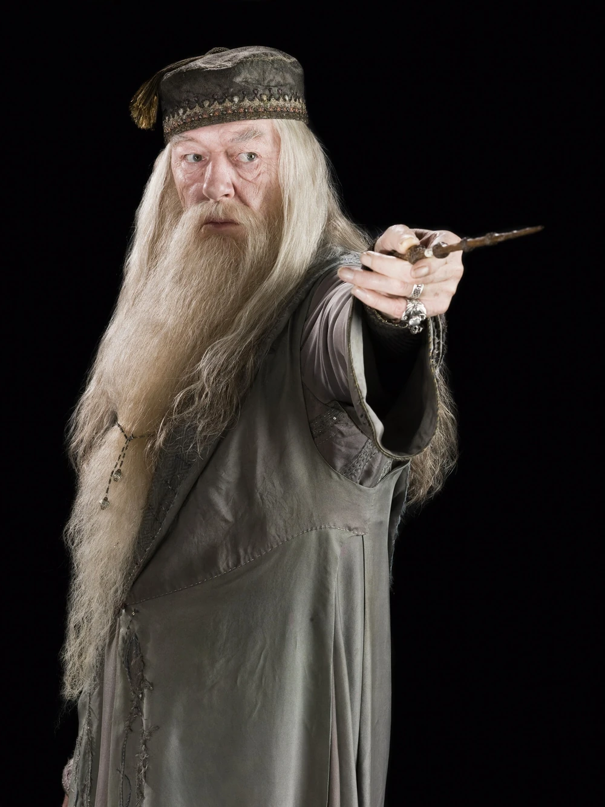
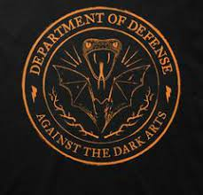

this is a wepbage all about me. My likes, Dislikes, hopes, dreams, and favorite things.

I'm a student at Hogwarts. I love to play quidditch and hang out with my friends in my spare time. My Parents were killed when I was a toddler.
Go visit the gamekeeper hagrid down in his hut.
| Favorite Sport | Quidditch | |
|---|---|---|
| Favorite Teacher | Albus Dumbledore |  |
| Favorite Subject | Defense Against the Dark Arts |  |
| Favorite Color | Crimson |
Email: harrypotter@hogwarts.edu
Phone: 123-456-7890